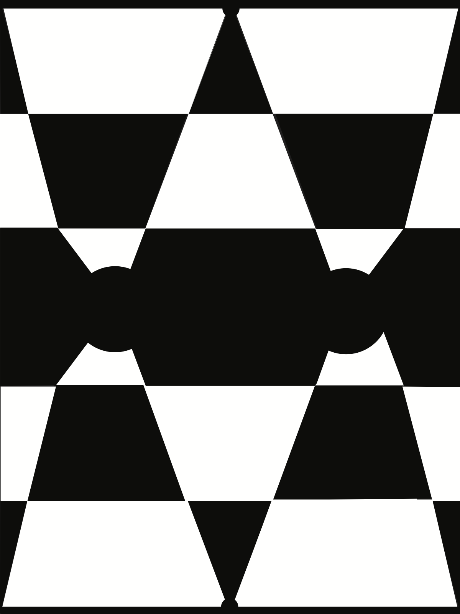
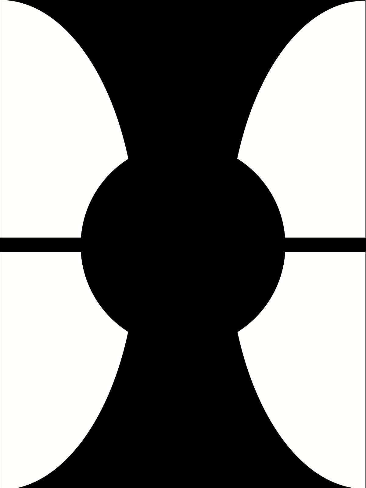

AMBIGUOUS ABSTRACTION
A design and composition study exploring abstraction, balance, and visual tension, where forms shift depending on how the viewer reads them.
COURSE
Design & Composition
FOCUS
Ambiguity • Symmetry • Visual rhythm
MEDIUM
Digital composition
CONCEPT
This project explores how abstraction can feel both structured and uncertain at the same time. By using symmetry and repeated geometry, the compositions create a sense of stability, but the shapes remain visually ambiguous, allowing the viewer to interpret form, depth, and movement in more than one way.
WORKS

